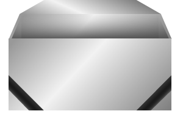
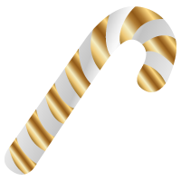

Xmas NFT Loot Box Market
Tehtävä
- Tee kansioon demos/d22 tiedostot index.html ja style.css
- Lataa lootbox.js samaan kansioon
- Alusta html dokumentti ja linkitä headiin style.css ja lootbox.js
- Käynnistä lootbox.js kutsumalla sen init-funktiota
script-tagissa ennen bodyn sulkeutumista:<script>init()</script> - Kuvat ohjeen lopussa
- Tee img kansio, minkä sisälle boxes ja items kansiot
- Valitse ja lataa sopiva taustakuva img kansion juureen
(voit myös käyttää Unsplash, Pixabay yms.) - Lataa avatut ja suljetut laatikot img/boxes kansioon
- Lataa esineet (tai NFT:t) img/items kansioon
- Bodyn sisällä on 2 elementtiä:
- header, jossa on pääotsikko
- main, jossa on 3 figure tagia eri id:llä (golden, silver, bronze)
- kunkin figure tagin sisällä on 2 img tagia, joista
- ensimmäinen on ?-kuva (blank)
- toinen on itse laatikon kuva suljettuna
- figcaptionissa lukee laatikon väri/taso golden/silver/bronze loot box
- viimeisenä elementtinä figuren sisällä on avausnappi (button)
- napin onclick eventin tulee kutsua funktiota openLootBox
parametrillä golden, silver tai bronze
onclick="openLootBox('golden')" - Lisää nappeihin myös teksti Open/Avaa
CSS
valitse otsikolle sopiva Google fontti ja tuo se CSS:n 1. rivillä
määritä root muuttujiksi värit kulta, hopea ja pronssi
body- nollaa marginaalit
- aseta leveys 100vw
- ja korkeus 100vh
- piilota ylivuoto jotta bodyä ei voi scrollata
- aseta tasutakuva
- aseta taustakuva peittämään koko tausta
- tee bodystä flex ja keskitä flex elementit pystysuunnassa
- aseta flex suunta column
- käytä justify-content: space-around; jolloin ylös ja alas jää tilaa
- aseta tekstin väri valkoinen tai taustasta muuten erottuva
- aseta fontti perustekstille esim. Arial
- käytä otsikossa Google fonttia
- kasvata otsikon kokoa
- valitse tekstin väri
- aseta tekstin varjo, jos otsikko ei erotu vieläkään taustasta
- keskitä teksti
- tee mainista flex elementti
- keskitä sisältö
- aseta position: relative; jotta kuva saadaan asemoitua suhteessa tähän tägiin
- kasvata fonttia
- tee fontista lihavoitu
- keskitä teksti
- aseta leveys 100%
- aseta maksimileveys 200px
- aseta leveys 100%
- käytä position: absolute; top: -200px; left: 0;
- jotta esine leijuu laatikon yläpuolella
- muotoile avausnappia
- aseta padding
- kasvata fontin kokoa
- lihavoi teksti
- pyöristä kulmat
- tee hiirestä sormi
- aseta tekstin väriksi musta tai muu tumma
- eli siis ensimmäinen sivulla oleva nappi
- aseta taustaväriksi kulta/gold jonka tallensit root-muuttujaan
- käytä samaa logiikkaa ja aseta hopea ja pronssi seuraaviin nappeihin
- aseta napille, napin värinen hehku kun hiiri on sen päällä
- käytä box-shadow ja root-muuttujan väriä
- tee hover efekti kaikille kolmelle napille
- kun laatikko on avattu, nappi menee epäaktiiviseen tilaan
- vaihda napin taustaväri harmaa
- vaihda tekstin väri tummempi harmaa
- estä kursorin muuttuminen sormeksi
- lootbox.js asettaa laatikosta ponnahtavalle esineelle luokan .slide_in
- luokassa on määrätty animaatio slideInFromBottom
- keyframes kohdassa animaatio
- siirtää esinettä ylöspäin
- häivyttää esineen näkyville
- voit muokata animaatiota
Tallenna GitHubiin
Muokkaa esineitä
- Esineet ovat tavallisia 200 x 200px .png kuvia
- Voit piirtää, ladata lisää tai muokata niitä
Muokkaa lootbox.js
- boxTypes (array) on lista erilaisista laatikkotyypeistä, joita on määritetty 3
- lootItems[boxTypes[0]] ensimmäinen laatikko (golden) on paras, joten siitä voi löytää kaikkia esineitä, jota on määritetty arrayssä.
- Ensimmäinen esine (kuva) arrayssä on harvinaisin.
- silver ja bronze laatikoissa ei ole kaikkia esineitä
- lootItemsBiased toteutetaan automaattisesti array,
jossa ensimmäisenä mainittua esinettä on 1, toista 2, kolmatta 3 jne.

